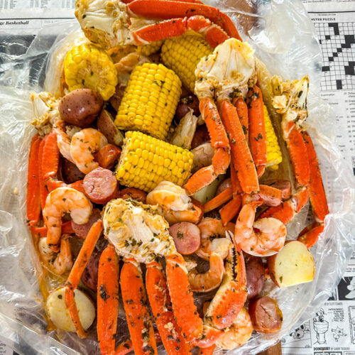

Seafood Boil

Description
This is the BEST Seafood Boil recipe you can whip up right at home, y’all.
It’s loaded with jumbo shrimp, crab, andouille sausage, potatoes, eggs, and corn on the cob that’s simmered in a
flavor-filled broth of cajun spices and aromatics.
All that hearty goodness gets drowned and smothered in an epic garlic butter sauce.
This finger-licking-good seafood boil recipe is an easy meal that serves a crowd!
Ingredients
- 1lb of shrimp
- 2 snow crab clusters
- 1/2lb clams
- 1/2lb mussels
- 1/2lb andouille sausage
- 2 corns
- 4 small potatoes
- 1 lemon
- 4 cloves of garlic
- 1 onion
- 2 bay leaves
- 1/4 cup Old Bay
Steps
- Prepare the Pot: Fill a large pot with 4 cups of water, add the quartered lemon, smashed garlic, quartered
onion, bay leaves, and seafood seasoning. If you’re using beer, add it now. Bring the mixture to a boil.
- Cook Potatoes and Corn: Add the potatoes to the boiling pot. Let them cook for about 8-10 minutes. Then, add the
corn and cook for another 5 minutes until the potatoes are tender.
- Add Seafood and Sausage: Add the clams or mussels, crab, and andouille sausage to the pot. Let them cook for
about 5 minutes, then add the shrimp last. Continue cooking for another 3-5 minutes or until all seafood is
cooked through (shrimp should be pink and clams/mussels opened).
- Check if all the seafood is properly cooked and the vegetables are tender. Once done, turn off the heat. Drain
the contents using a colander or a strainer.
- Serve the drained seafood, sausage, and vegetables on a large platter. Sprinkle with a little more seafood
seasoning and squeeze lemon juice over the top for added zest.
Home